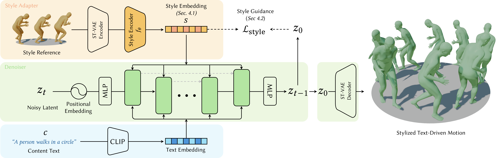

Text-driven motion diffusion models are capable of generating realistic human motions, but text alone often struggles to express fine-level nuances of motion, commonly referred to as style. Recent approaches have tackled this challenge by attaching a style injection mechanism to a pretrained text-driven diffusion model. Existing stylization methods, however, either require style-specific fine-tuning of existing models or rely on heavy ControlNet-based architectures, limiting efficiency and generalization to unseen styles. We propose a lightweight style conditioning framework that dynamically modulates a pretrained diffusion model through hypernetwork-generated LoRA parameters. A style reference motion is encoded into a global style embedding, which is mapped by a hypernetwork to low-rank updates applied at each denoising step of the diffusion model. By structuring the style latent space with a supervised contrastive loss, our framework reliably captures diverse stylistic attributes, improves generalization to unseen styles, and supports optimization-based guidance without requiring predefined style categories. Experiments on the HumanML3D and 100STYLE datasets show state-of-the-art stylization results, while achieving improved stylization for unseen styles.
